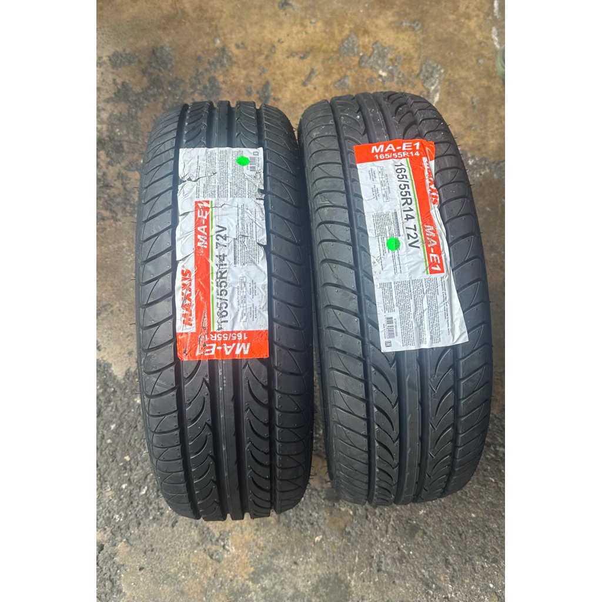

Maxxis MA-E1 165/55R14

RM 150.00
The Maxxis MA-E1 is a high-performance radial passenger car tyre featuring a directional tread pattern and four circumferential grooves for efficient water drainage and reliable wet and dry grip. Its reinforced steel belt construction and spiral-wound nylon layer enhance handling stability, durability and driving comfort while reducing road noise. Suitable for daily commuting and highway driving.
Klang Hock Li Tyre Services Sdn Bhd, Klang, Selangor, Malaysia.
View live product details and enquire